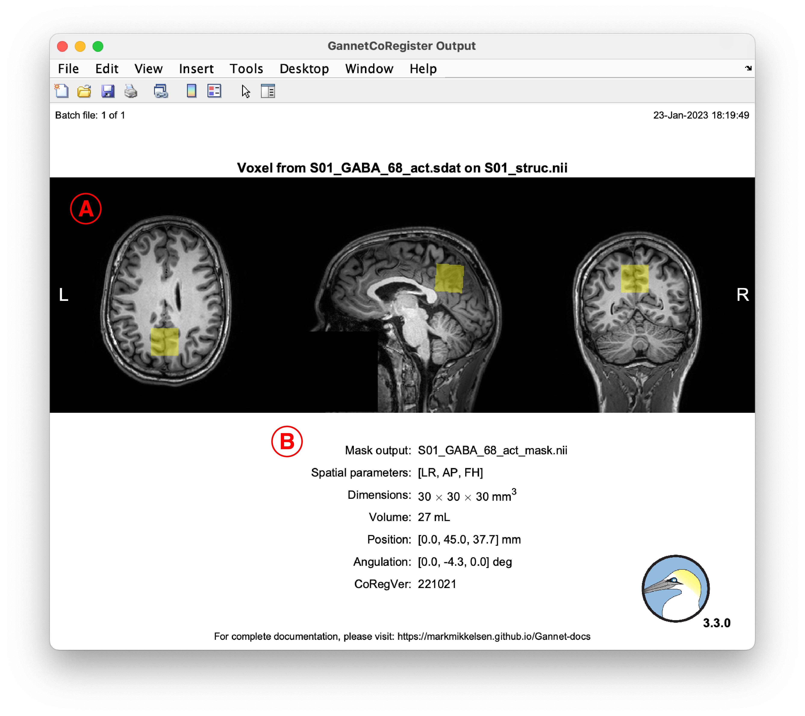

Reference
Last updated: May 13, 2020
WEBSITE UNDER DEVELOPMENT – CONTENT INCOMPLETE
Pre-initialize Gannet
GannetPreInitialise.m
| Acquisiton parameters | Description |
|---|---|
target |
This sets the metabolite of interest that was edited in the MRS experiment. If HERMES was used, multiple metabolites should be selected. |
ONOFForder |
The order of the ON/OFF editing scans in the MEGA-PRESS acquisitions determines (amongst other things in Gannet) how the subspectra are subtracted to derive the difference spectrum. Typically, Philips acquisitions are 'offfirst' and GE and Siemens acquisitions are 'onfirst' (but this is not always true so you should always check your acquisition parameters). |
seqorig |
This parameter is specific to Philips data. It specifies whether the data were acquired using the patch developed at Johns Hopkins University or the Philips product sequence. |
| Analysis parameters | Description |
|---|---|
LB |
This sets the amount of exponential line-broadening to apply to the data (in Hz). |
water_phase_correction |
Whether to perform an eddy-current correction (1) on the water data. |
data_phase_correction |
Whether to perform an eddy-current correction on the metabolite data. |
water_removal |
Whether to remove the residual water signal from the difference spectra using an HSVD filter (2). |
AlignTo |
Which method to use for shot-to-shot frequency-and-phase correction. |
Vox |
This parameter only applies to PRIAM data. The desired naming of the output structure fields. |
FitResidWater |
Whether to model the residual water signal in the difference spectrum. This is used to calculate the water suppression factor. |
| Flags | Description |
|---|---|
HERMES |
Set to 1 if the data were acquired using HERMES. |
HERCULES |
Set to 1 if the data were acquired using HERCULES (HERMES must also be set to 1). |
PRIAM |
Set to 1 if the data were acquired using PRIAM. |
phantom |
Set to 1 if the data were acquired in a phantom. |
mat |
Set to 1 to save the output structure as a MAT-file. |
sdat |
Set to 1 to export the difference spectra as a .sdat file (only for Philips .sdat MEGA-PRESS datasets). |
csv |
Set to 1 to export a .csv file containing useful data for analysis (applies to GannetFit.m, GannetSegment.m and GannetQuantify.m). |
Loading and preprocessing data
Parent function
GannetLoad.m
Example usage:
Output:

Signal fitting
Parent function
GannetFit.m
Example usage:
MRS_struct = GannetLoad({'S01_GABA_68_act.sdat', 'S01_GABA_68_ref.sdat'});
MRS_struct = GannetFit(MRS_struct);Output:

Voxel co-registration
Parent function
GannetCoRegister.m
Example usage:
MRS_struct = GannetLoad({'S01_GABA_68_act.sdat', 'S01_GABA_68_ref.sdat'});
MRS_struct = GannetFit(MRS_struct);
MRS_struct = GannetCoRegister(MRS_struct, {'S01_struc.nii'});Output:

Tissue segmentation
Parent function
GannetSegment.m
Example usage:
MRS_struct = GannetLoad({'S01_GABA_68_act.sdat', 'S01_GABA_68_ref.sdat'});
MRS_struct = GannetFit(MRS_struct);
MRS_struct = GannetCoRegister(MRS_struct, {'S01_struc.nii'});
MRS_struct = GannetSegment(MRS_struct);Output:

Quantification
Parent function
GannetQuantify.m
Example usage:
MRS_struct = GannetLoad({'S01_GABA_68_act.sdat', 'S01_GABA_68_ref.sdat'});
MRS_struct = GannetFit(MRS_struct);
MRS_struct = GannetCoRegister(MRS_struct, {'S01_struc.nii'});
MRS_struct = GannetSegment(MRS_struct);
MRS_struct = GannetQuantify(MRS_struct);Output:

Output structure attributes
MRS_struct
| Field | Description |
|---|---|
version |
Release numbers of Gannet and the Gannet modules |
ii |
During analysis, the current file being loaded. After analysis, the number of files loaded |
metabfile |
String array containing the inputted metabolite data filenames |
waterfile |
String array containing the inputted water reference data filenames |
MRS_struct.p
| Field | Description |
|---|---|
Reference_compound |
Concentrations will be calculated relative to this. If a water reference is provided, concentrations will be calculated relative to both water and Cr, otherwise they will be calculated relative to Cr. |
target |
|
ONOFForder |
|
seqorig |
|
LB |
|
water_phase_correction |
|
data_phase_correction |
|
water_removal |
|
AlignTo |
|
Vox |
See above |
FitResidWater |
|
HERMES |
|
HERCULES |
|
PRIAM |
|
phantom |
|
mat |
|
sdat |
|
csv |
|
vendor |
Scanner vendor |
spar_string |
|
numscans |
Total number of scans in the batch |
npoints |
Number of data points |
nrows |
|
Navg |
Total number of averages |
TR |
Repetition time (ms) |
TE |
Echo time (m) |
LarmorFreq |
Larmor frequency (kHz) |
sw |
Spectral width (Hz) |
voxdim |
Voxel dimensions (mm) |
voxoff |
Voxel position offset (mm) |
voxang |
Voxel angulation (deg) |
Nwateravg |
Total number of water averages |
ZeroFillTo |
Processed spectra are zero-filled to this many data points |
zf |
Zero-filling factor |
df |
|
SpecRes |
Spectral resolution of the raw data |
SpecResNominal |
Nominal spectral resolution of the processed data |
Tacq |
Acquisition time |
MRS_struct.fids
| Field | Description |
|---|---|
data |
Raw time-domain metabolite data (dimensions: npoints \(\times\) nrows) of the last loaded dataset |
data_water |
|
ON_OFF |
|
data_align |
|
vox1 |
References
1. Klose U. In vivo proton spectroscopy in presence of eddy currents. Magnetic Resonance in Medicine. 1990;14(1):26-30. doi:10.1002/mrm.1910140104
2. Barkhuijsen H, Beer R de, Ormondt D van. Improved algorithm for noniterative time-domain model fitting to exponentially damped magnetic resonance signals. Journal of Magnetic Resonance. 1987;73(3):553-557. doi:10.1016/0022-2364(87)90023-0
Built with R Markdown and RStudio.
Copyright © 2020 Mark Mikkelsen. All rights reserved.